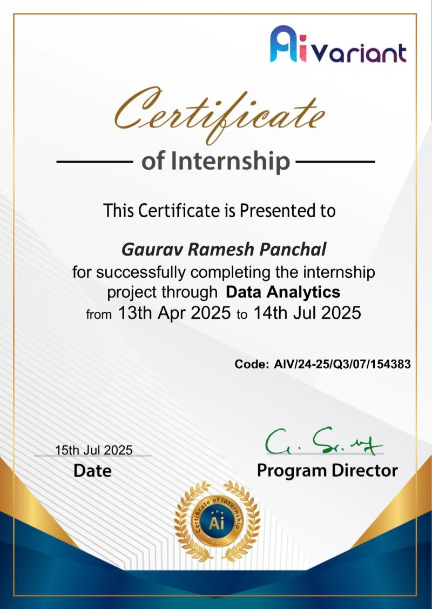

APR — JUL 2025
Data Analytics Intern · Aivariant
Worked with datasets containing more than 10,000 records, using Python, Pandas, and NumPy to clean and explore the data.
- Prepared data for analysis and explored patterns across records.
- Created visualizations and reports to communicate findings.

View internship certificate ↗